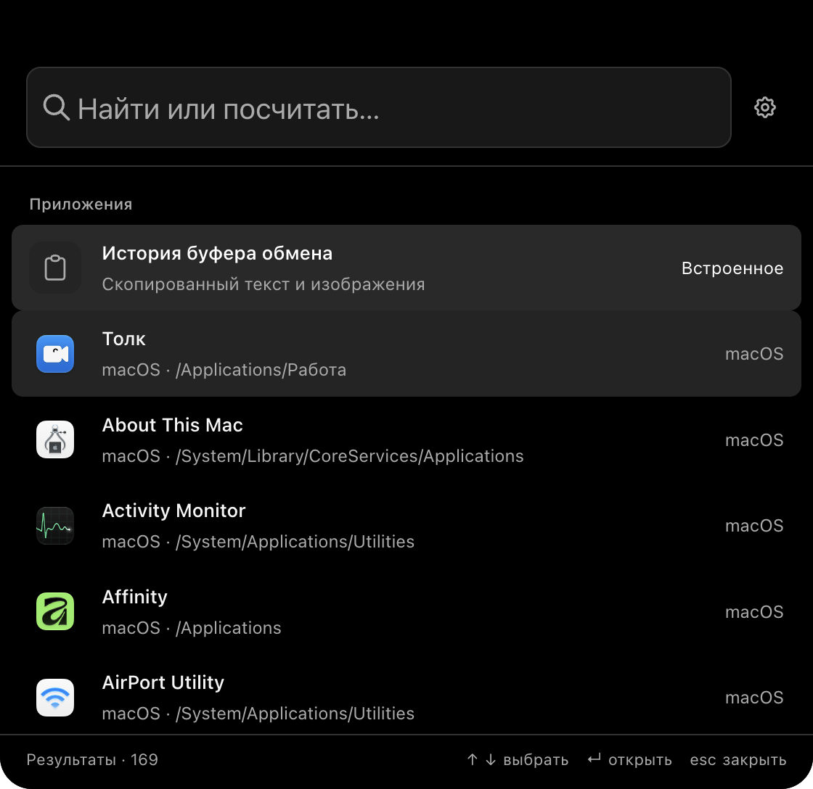
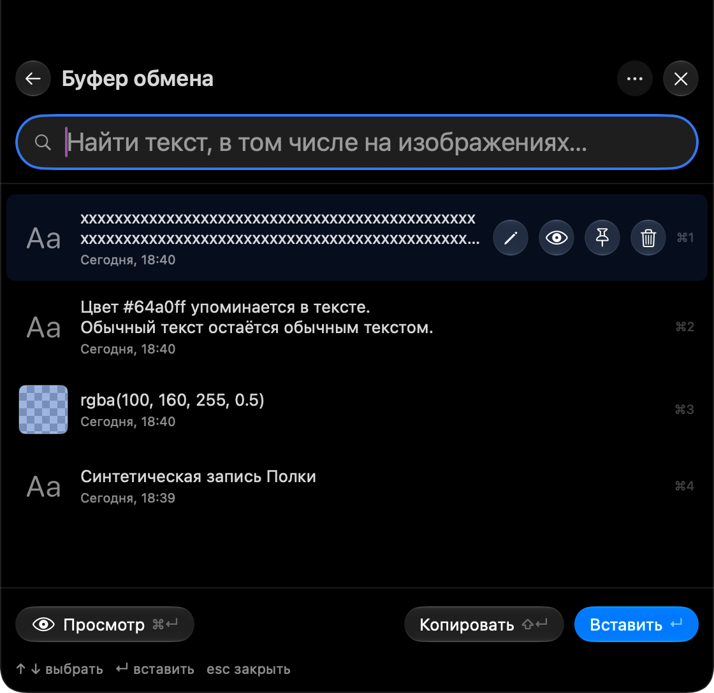
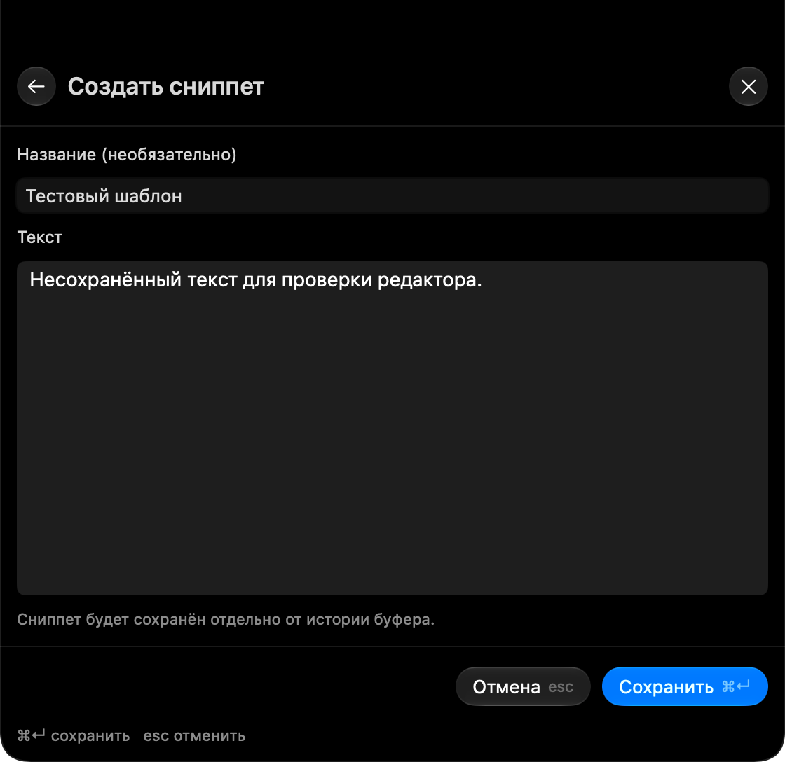
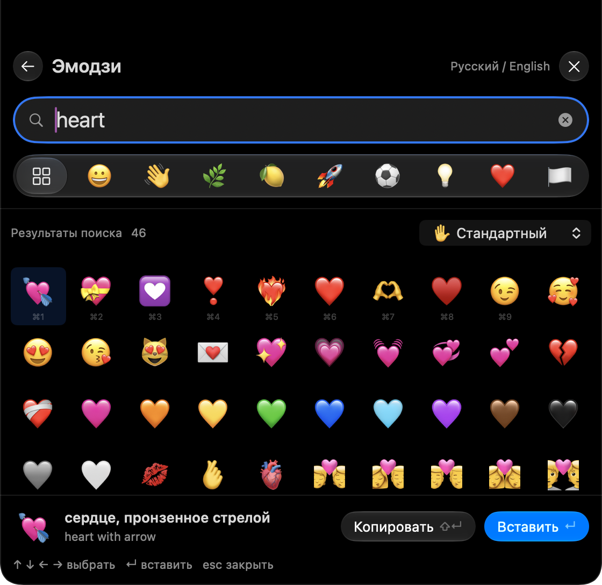
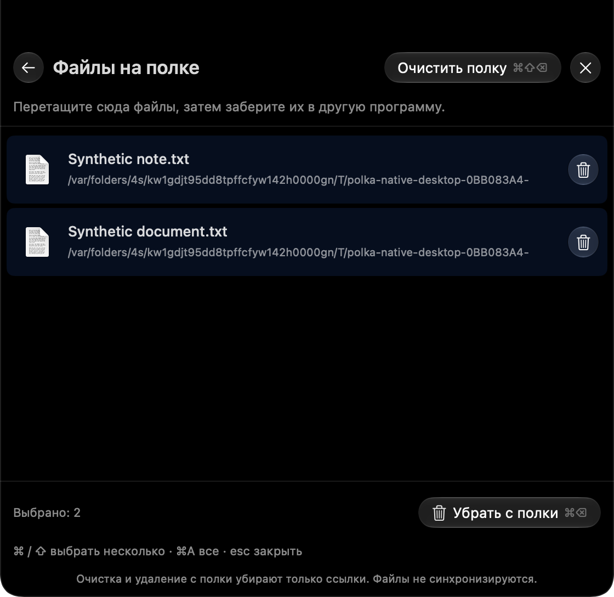

YOUR NEXT MOVE, ONE SEARCH AWAY
Less looking.
More launching.
A few letters, a small typo, even the wrong keyboard layout. Polka finds your apps and learns which ones you reach for most.
Native to your Mac. Naturally in your flow.
Your apps. Your clipboard. The little things in between.
One native Mac shelf, right
where you need it.
Made for macOS 27+ · Apple silicon · Free & open source





Choose a view · Use ← → when the tabs are focused.
Captured from the native Mac app with example data. Background is illustrative.
LESS IN THE WAY. MORE WITHIN REACH.
Move your pointer to the top of your screen, or press
⌘⇧Space.
Polka opens. Find what you need. Get right back to your flow.
YOUR NEXT MOVE, ONE SEARCH AWAY
A few letters, a small typo, even the wrong keyboard layout. Polka finds your apps and learns which ones you reach for most.
A SECOND CHANCE FOR EVERY COPY
Find text, images, and even words inside screenshots. Pin the things you need again. Copied colors appear as swatches, ready to reuse.
SKIP THE EXTRA APP
Calculate, convert units, or check the time in another city—all in search. Press Enter to copy the answer.
RIGHT HERE. ON YOUR MAC.
History is encrypted on your Mac. Image text is recognized locally with Apple Vision. No cloud account or API key required.
A closer look at your dataTHE WORDS YOU REACH FOR
Addresses, ready-made replies, the details you always look up. Keep them as searchable snippets, separate from your clipboard history.
In Polka: ⌘ N new snippet · ⌘ Enter save
A STOP ALONG THE WAY
Drag files from Finder to the top of your screen. Collect them on the shelf, then drag them into another app, together or one at a time.
A temporary home for file references. Removing one leaves the original file untouched.
JUST THE RIGHT EXPRESSION
Find emoji in English or Russian. Browse categories, choose a skin tone, and copy or paste—all without going online.
ANOTHER MAC. THE SAME LITTLE THINGS.
Optionally pair your Macs on the same local network. Clipboard history and snippets sync directly between them over an encrypted connection.
Both Macs need Polka running. No server or cloud account.
THOUGHTFULLY OUT OF THE WAY
Choose camera and microphone indicators separately. A quiet outline shows detected activity, even with the shelf closed.
Launch at login, work quietly in the background, and keep your Dock clear.
Choose which built-in tools appear, set your shortcuts, and adjust clipboard retention. Reopen within a minute to return to your place.
BUILT WITH SWIFT, SWIFTUI & APPKIT.
Your everyday essentials, a little closer.
Get Polka for MacOpen the DMG and drag Polka into Applications. Releases use a self-signed certificate and aren’t notarized by Apple. Follow the installation guide for the first launch, or choose the installer script described there.